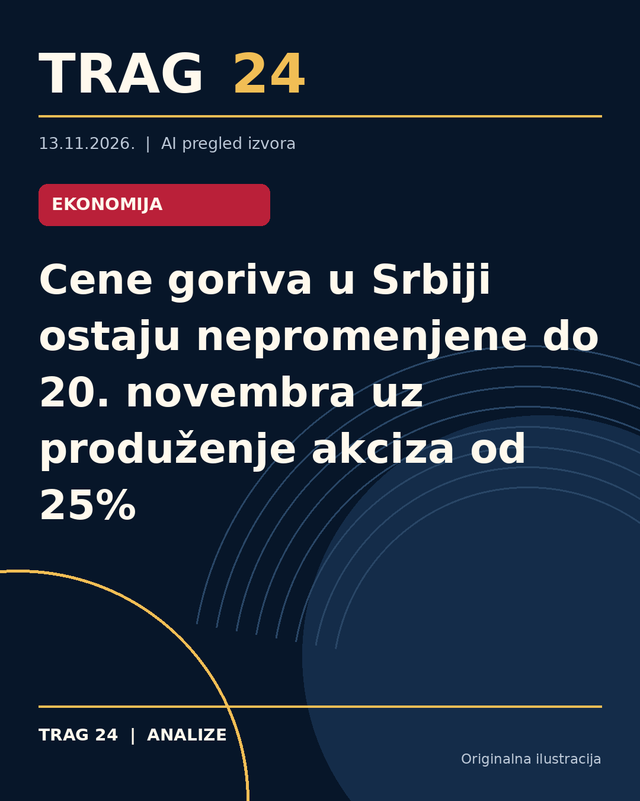

Cene goriva u Srbiji ostaju nepromenjene do 20. novembra uz produženje akciza od 25%

ŠTA SE DOGODILO
Vlada Srbije u tehničkom mandatu donela je odluku o produženju smanjenja akciza na derivate nafte za 25 odsto, što utiče na cenu goriva na pumpama. Shodno toj odluci, cene evrodizela i benzina neće se menjati narednih sedam dana.
HRONOLOGIJA
Prošle nedelje cene su bile 236 dinara za evrodizel i 207 dinara za benzin, što ostaje nepromenjeno do petka, 20. novembra. Odluka o smanjenju akciza koja je prethodno bila na snazi, isticala je u nedelju pre ovog perioda, a Vlada ju je danas produžila do 22. novembra.
ŠTA NAVODE IZVORI
Svi izvori – Insajder, Nova.rs i Danas – slažu se da će se postojeće cene goriva zadržati na nivou od 236 dinara po litru evrodizela i 207 dinara po litru benzina do 20. novembra. Takođe su preneli da je odluka o smanjenju akciza na derivate nafte produžena do 22. novembra. Dodatno, Danas navodi probleme sa smanjenjem proizvodnje u rafineriji u Pančevu usled havarije, ali i da NIS ima dovoljno zaliha derivata.
ŠTA JE POTVRĐENO
Potvrđeno je da cene goriva ostaju nepromenjene narednih sedam dana, kao i da je akciza smanjena za 25 odsto i da je produžena u tehničkom mandatu Vlade Srbije. Cena evrodizela iznosi 236 dinara po litru, a benzina 207 dinara po litru, važeći do 20. novembra.
ŠTA NIJE POTVRĐENO
Iz dostupnih izvora nema podataka o mogućim promenama cena nakon isteka pomenutog roka ili o daljim odlukama u vezi sa akcizama posle 22. novembra. Takođe, nije potvrđeno kako će eventualni problemi u rafineriji uticati na cene goriva u narednom periodu.
ŠTA OSTАJE OTVORENO: Ostaje nejasno kako će se situacija na tržištu goriva razvijati nakon 20. i 22. novembra, kao i da li će biti dodatnih intervencija Vlade po pitanju akciza ili cene goriva. Takođe, nije poznato da li će navedene tehničke teškoće u proizvodnji derivata imati dugoročne posledice po dostupnost i cenu goriva.
Izvori
- https://insajder.net/prenosimo/objavljene-cene-goriva-koje-ce-vaziti-narednih-sedam-dana
- https://nova.rs/vesti/biznis/objavljene-cene-goriva-do-sledeceg-petka/
- https://www.danas.rs/vesti/ekonomija/objavljene-nove-cene-goriva-koje-ce-vaziti-do-20-novembra/
Ova analiza je pripremljena uz pomoć veštačke inteligencije na osnovu javno dostupnih izvora. Navodi izvora nisu nužno nezavisno potvrđeni.